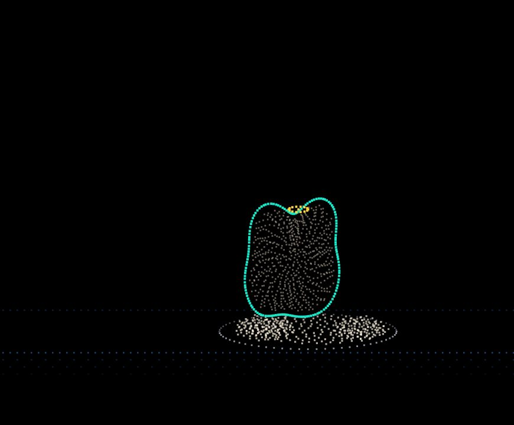
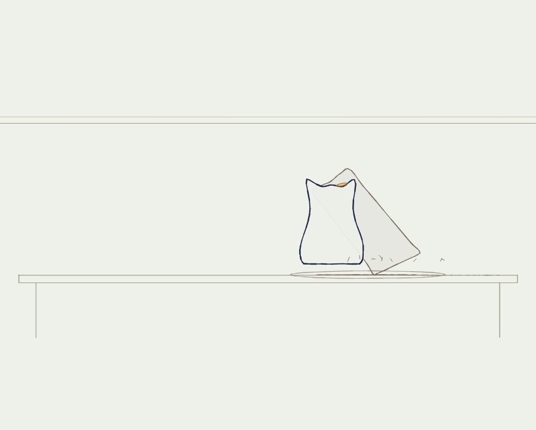
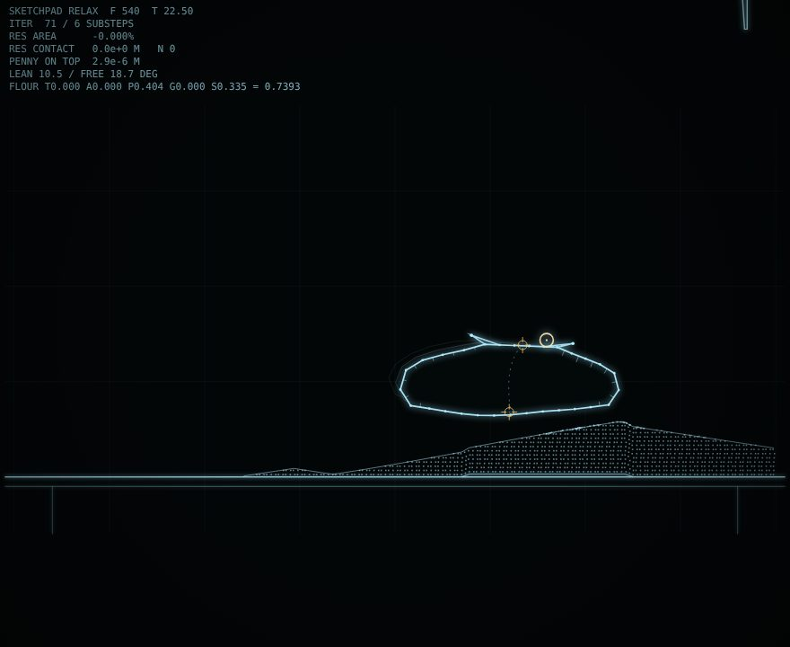
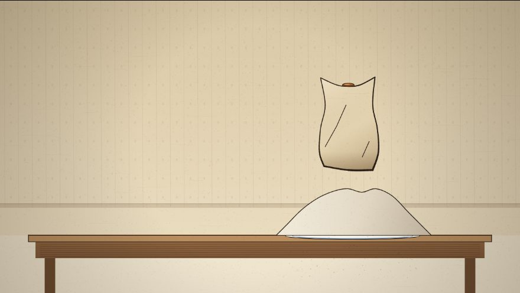
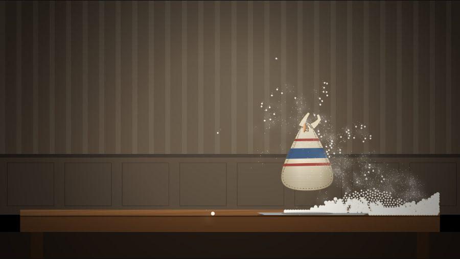

Flour Sacks
In the 1930s Disney trained animators on a flour sack: no face, no limbs, no fingers. Mood has to read through weight, silhouette, the line of action and four corners that drag behind the body. These are every flour-sack film in CRASH LAB. In the first project one sack makes a decision; in the second four sacks do twelve terrible things to each other in Calvino’s burned house.
The Flour Tower
A knife slices a tower of packed flour with a penny on top, the old parlor game. A half-empty sack flinches, notices the tower lean, comes to it head low and holds it up. The tower falls; the sack catches the penny, gathers the scattered flour back into itself and stands where the tower stood. Six swarms each built the sack, the tower and the knife from nothing in their own language, under one score of ten choices.
The Flour Tower, handmade
- Title and story
- SCION 02 · Lotte Reiniger, cut card on pins
- SCION 06 · John Whitney, harmonics in points of light
- SCION 07 · Peter Foldès, one pen line
- SCION 08 · Ivan Sutherland, solved constraints
- SCION 14 · Pose2Pose, 46 hand-drawn sacks
- SCION 41 · soft body, 753 real grains
- The result
Cuts and openings
The trailer
A title tower of 403 animation cels, then the film. Every sound is made of grains.
The film alone
One camera shoots all six films in a shared world, so a cut changes the sack’s material and keeps its pose.
Frankenstein cut
The story once, with the sack sewn together from six bodies.
Opening: flour grains
The game played by about 20,000 grains of flour under one lamp.
Opening: picture book
Ink on paper, the game explained one line per step.
Vertical short
Cold open on the catch; the walk changes material at every step.
The six swarm films, live
 Lotte ReinigerSCION 02 · silhouette theatre
Lotte ReinigerSCION 02 · silhouette theatre

John WhitneySCION 06 · harmonic motion
Peter FoldèsSCION 07 · drawn metamorphosis
Ivan SutherlandSCION 08 · constraint sketchpad
Pose2PoseSCION 14 · drawing selection
Soft bodySCION 41 · cloth and grainThe Burning of the Abominable House
A house burns with its four tenants. A copybook survives with only its index: twelve abominable deeds, and no record of who did what to whom. Every deed is animated by a different SCION operation and can be played between any two tenants, so the film bank can play any of the 8,916,100,448,256 stories. Each deed leaves a mark and a memory, and the tenants can choose with beliefs, plans and memories of their own.
The most likely story
The story a Monte Carlo tree search rated most believable given who the tenants are: blackmail, drugs, a knife, a gun, a rope, and a fire at the end.
The other films
The first film
The story told once, from the ruins to the copybook to the count, in a doll’s-house section of the house.
One story from the bank
A random choice of who did each deed, with every memory, transition and consequence.